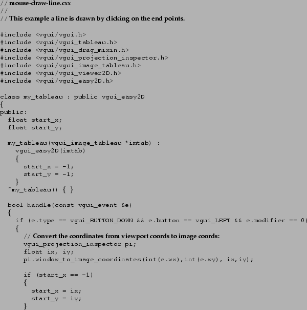

There are several reasons why you may wish to write your application without using the VGUI pattern. One reason is that only menus and dialog boxes are available using the pattern provided by VGUI. If you want to use more complicated widgets in your GUI (e.g. sliders, buttons) then you will have to write the application for one particular GUI toolkit only.
Alternatively you may be very familiar with a particular toolkit and not want to learn the VGUI pattern for menus etc (but remember this will make your code less portable).
As a first example here is the display image example again, but this time written in GTK. We still use the tableau code from VGUI to create the OpenGL area where the image is displayed and the vgui_gtk_adaptor class to plug the OpenGL area into our GTK code.

In this next example we are writing a movie player and we want to use buttons to stop and start the movie. In order to do this the application has been written in GTK.